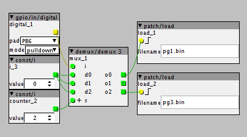

Hi
You can have multiple patches on a sd-card, but how do you switch between them? there is a patch/load object but then you have to supply a filname and that doesn't seem very practical if you have a lot of patches and just want the next one.
Switching patches
mnskll
#1
johannes
#2
I agree it is not very practical.
I could add an variation of the patch/load object where you supply the filename through an inlet. And then use string/indexed to generate filenames like pgm001.bin
This could be wired to midi/in/pgm to respond to program changes. The downside of this approach is that, when another program change is received while a patch is still loading, it will skip that program change. So it may be better to handle this in firmware rather than in a patch. But then program changes will be hardwired to load patches, reducing the freedom of patching. Also this would be program changes on a specific midi channel - but which one? One cannot always assume channel 1 in more complex midi setups...
Yeah, I have considered the same thing, and was thinking about create two objects
i) use bank messages to switch patches
ii) use program change messages to switch presets
if you have the skills, its not too tricky to create a new axo object to do something different, essentially use the fatfs methods to query the SDCard, and then you LoadPatch.
just be careful though, as doing this 'live', query the SDCard in the audio thread, would not be a good idea, and even in a separate thread MAY cause audio artefacts.
(this is the great thing about this open environment, anyone can dig it, and contribute... and the library will build with contributions)
trying to make a patchable object though raises some interesting questions...
first is, if its an object that 'loads next patch' then it would have to exist on all patches you want to switch between. and then it would have to be implemented 'without' state (since you lose state when you load a patch) , that means it would have to go in 'alphabetic order' (ok, you can prefix with numbers to force this)
Johannes may disagree, but I don't think id want this at the firmware level... id want to tell the firmware what it should do rather than have 'default functions', I think that is the 'modular way'.
Im also going to be building this into a controller implementation...more on that later 
one last thought...
I actually have added patch switching which is controlled on my eigenharp, and for that as a 'performance' side, I did not want to step through patches, I really wanted the same button to always load a certain patch,
so I would disagree that the patch/load is 'not practical', in this scenario its exactly what you want.
(it would be nice perhaps if there was a 'file selector' on the object though.)
please no.... I think this is a slippery road... first its hard coding program changes messages, then next thing we know, we will end up with a 'semi modular', with built in CC controlling master volume...
I think the firmware operation should be light, and patches contain functionality.
sure perhaps everyone will add a 'program change object' as standard, but thats not dissimilar form the way we usually add an audio out object, but its our choice as a patchers.
EDIT: let me a add a use case, why adding build-in functionality into the firmware is 'bad' (imho)
what if I now what to use Axoloti, as an 'intelligent' midi router, that take program changes events to determined which midi output to send to (e.g. I have different synths on different midi channels).
if program changes are hardcoded to load patches, I now cannot do this.
mnskll
#5
an inlet version would be great, I thought there would be one already. still I need to supply all the names of patches. It would be nice to just be able to choose "next" or "previous". then I could just include that in every patch I make.
hardwired to midi pgmchange in firmware is maybe what I'm really looking for, but I understand the complexity and restrictions of that
I'm not sure an 'inlet' version will work... how will you know in the patch, where you currently are within that list? we would have to have someway of also knowing 'the name' of the patch currently loaded.
(not a bad thing to have actually... perhaps useful in firmware e.g. thinking axoloti remote)
mnskll
#7
the thing with the inlet version is you have to know the names of all the patches on the card you like to use, and calling it from within a patch, you know witch patch you're in. but i'ts a lot of work and it has to be done in every patch as well.
What I want to be able to do is to just fill the SD with LOTS of patches and then be able to just change among those and be able to add more patches and they would be included too.
@johannes , just had an idea, which actually could solve a few things....
controller objects.
these objects would be specified in the user preferences, and would be added to all patches (at the root level) when it is compiled i.e. they are not in the patch themselves.
these objects would add default functionality for a user, so different users using different controllers but with the same patch.
the main use case though is for controllers, different users have different midi controllers, and would want to add these to all patches, but we don't them to have to add them manually into every patch and save it.
(bad for demo/contributed patches)
and actually this program change idea could be considered a small controller in this case.
of course, not being on the patch, means that they can only do operations which do not require wiring, if we consider whats going on in Axoloti Remote, that can be quite a lot....
there would be a couple of 'extras' to think about with this:
- perhaps sub-patches, should be allow as controller objects? easier for some users to create.
- can they have UI components, initially id say no... but perhaps its ok, later when we have a presentations.
@mnskll, yeah I think some kind of dynamic loading would be nice, but we need to take care with the memory/performance side of that... as i said in first post, its not that hard.
also I think you need to think the practical side of this, stepping through "LOTS of patches", one by one when you have no display is not really useful either. (lets remember Axoloti can be used without a computer), so we need to think how this would work with 'controllers' like Axoloti Remote (which as far as i can tell from the code USED to be able to browse patches, though it doesn't appear to work at the moment)
mnskll
#9
I tried the remote and couldn't figure it out so it's nice to know that it doesn't work 
the axoloti control is said to be able to switch between patches, how is that supposed to work? I suppose the remote is trying to mimic that behaviour.
mnskll
#10
I'm aware that clicking through LOTS isn't practical, but say a manageable number like 15-20 and then be able to load different patches on the card at different times
thetechnobear
#11
Ive never seen it working, but from the code, it looks like when you select Load from SDCard, it should then display files on the SDCard and then you can select them.
note: I think its fair to say the Axoloti Remote, has not been completed, as obviously was more important to get Axoloti Core released, so its perhaps more a 'proof of concept' than designed to be used... and its is definitely subject to major changes.
thetechnobear
#12
if you have seen my Axoloti Push project, you can see what I was hinting at, with controllers and the ability to inspect the SD Card from an object 
btw: I've also fixed Axoloti Remote, so it now displays and loads patches from the SDCard.
thetechnobear
#14
hows, what done?
the Push, I query the SD Card in C, using f_opendir and then f_readdir , use this to populate the push display, then use LoadPatch(filenam) to load the patch.
(its not code to post as an example, as the push code is a little convoluted, which makes it more complicated than it is, but its reasonably clear how to do it in the Axoloti Remote code, which is in firmware/ui.c)
its not difficult to do, but presenting it in a 'generic object' has challenges (as stated previously).
I think the key will be for the firmware to be able to report the name/patch of the patch loaded... where applicable.. (since this is only applicable if you loaded from SDCard) then we can use that as the starting point for previous/next when querying the card.
.. this way we could have an object that says
current patch is N (number) on the SD card, and load patch N. (we could also offer objects to display filename of N) , this way one could programatically use a patch to load, and if wanted that could be done by program change/bank change.... or even note number (say from a launchpad)
mnskll
#15
Ok, what I'm hooping for is a method to do it in the using the GUI, my C is not that great
sovietpop
#16
thetechnobear : Is the fix coming for the next version ? Just wondering.
Thanks for the great work btw.
thetechnobear
#17
Yes, I would assume so, along with other fixes/improvements Ive been making.
however, i don't know when @johannes will release 1.0.4, its better to batch up quite a few improvements, so users don't have to update every week - assuming there are no show-stopper issues - only critical fix I've done for 1.0.4, is for multiple boards, and no one else seems to have noticed it yet
mrdrbobo
#19
So I don't knwo if any progress has been made on patch switching in fw or objects.
I tried it in a lo-tech manner. I put 3 patches (pg1, pg2, pg3) on the SD-card. In each of these patches I made a small switching mechanism, connected to a hardware button PB6, like this:

Then by pushing the button I can cycle through the 3 patches. It is quite a laborious solution, but it works. See the little YT video here.
johannes
#20
Here's a nice description of how it can be done currently : http://ticticelectro.com/2015/12/30/getting-started-with-axoloti/
(thanks @Abhoth!)
I'm developing more user friendly patch switching for the next release...